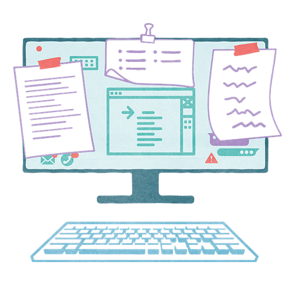

Mit der Academy erhaltet ihr im Business-Plan praxisnahe Lernmodule rund um Facilitation und wirksame Transformation.
Gemeinsam mit 9 Spaces zeigt Plan International Deutschland, wie wertebasiertes Arbeiten Orientierung gibt – nach innen wie nach außen.

Um den Blick aufs Wesentliche zu bewahren, helfen diese drei Listen.
Dieses Tool hilft dir herauszufinden, wie viel fokussierte Arbeit ideal wäre und wie du dieses Ziel schrittweise erreichst.
Mit bewussten Pausen gegen die Prokrastination.
Wie du dein Leben von digitalem Ballast befreist.